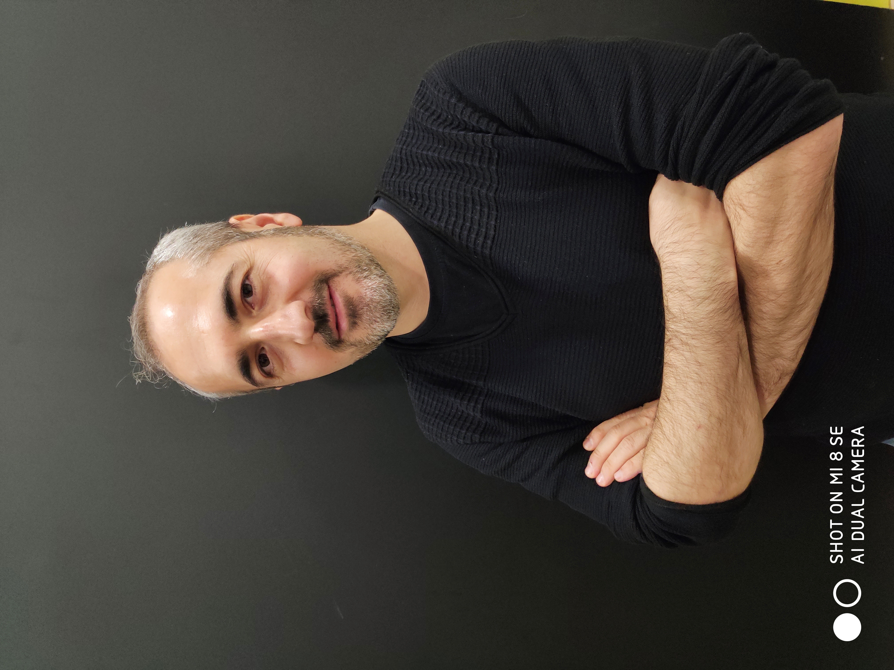

Summary

Ph.D. Candidate in Cognitive Science and Co-founder of Little Engineers Academy, 10+ years of experience in project management in R&D projects. 2+ years of experience in Blockchain technologies, developing trading bots for Cryptocurrency Exchanges. Highly experienced in JavaScript, NodeJs, and Solidity.
Education
- Middle East Technical Univercity
- Cognitive Science (Ph.D Candidate)
- Sept. 2015- June 2022
- GPA 3.95/4
- İstanbul Technical Univercity
- Electronics & Communication Enginner(Bachelor's degree)
- Sept. 2000- Jun. 2005
- GPA 3.14/4
Work Experience
- Blockchain & Web Developer (May. 2022 --)
-
Our Company has a great capacity to develop and deploy any kind of trading bots to make a well-done profits.
- Co-Founder of Little Engineer Academy (May. 2017 - May. 2022)
-
Our Company, which we established in 2017, has provided successful trainings to countless students on algorithmic thinking and coding, especially in various cities.
- Project Development Manager (Feb.2007-May. 2017)
- R&D Engineer (Aug.2007-Feb.2007)
- At the Vestel High-End Factory, carried out the planning and implementation of the Electromagnetic Compatibility process required for CE certification for state-of-the-art equipment.
Skills
- Blockchain - Web3 Developer | Solidity | Javascript | Bridges | The Graph | dApps | DAOs | NFTs | Smart Contracts | Analytical Thinking | Strong Communication | Planning | Time Management | Adaptability
Awards & Certifications
-
METU Graduate Courses Performance Award
-
The most successful student in Ph.D Program of the Department of the Cognitive Science
-
Blockchain Technology
-
Certification Complete-Clarusway
Others
Hobbies
Contact Me